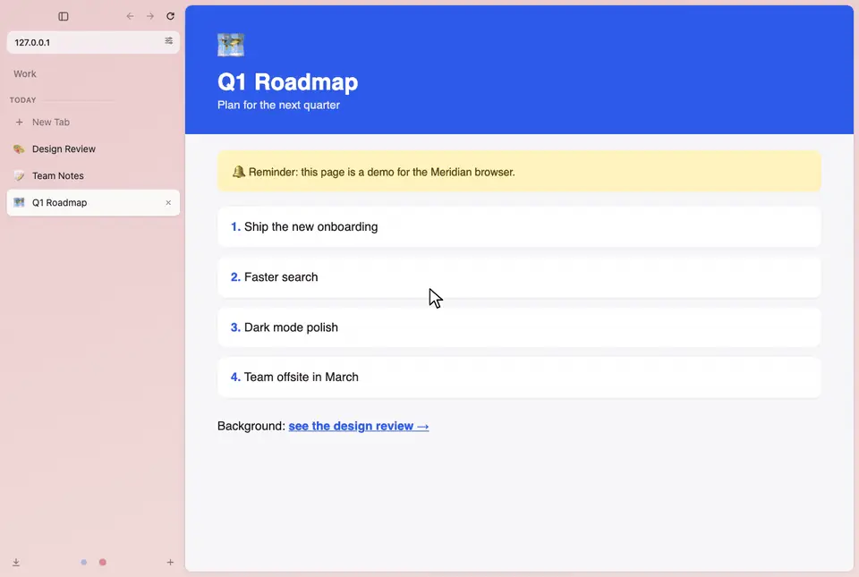
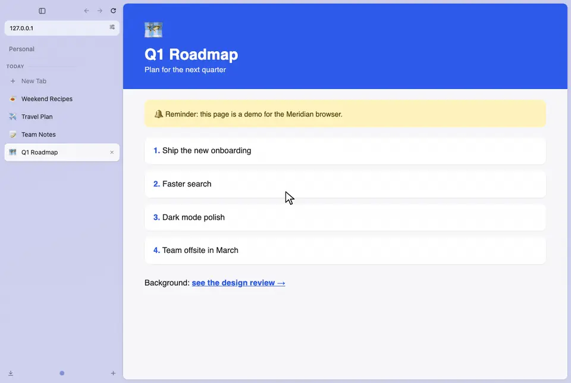
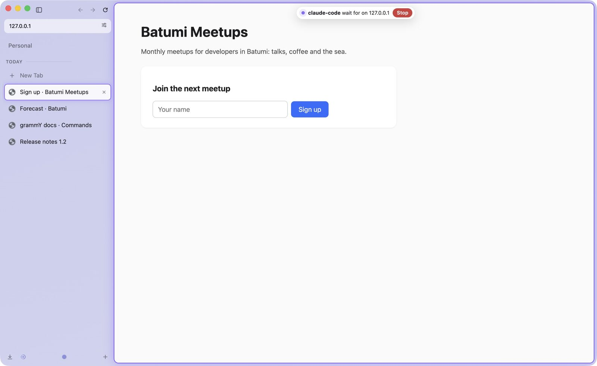
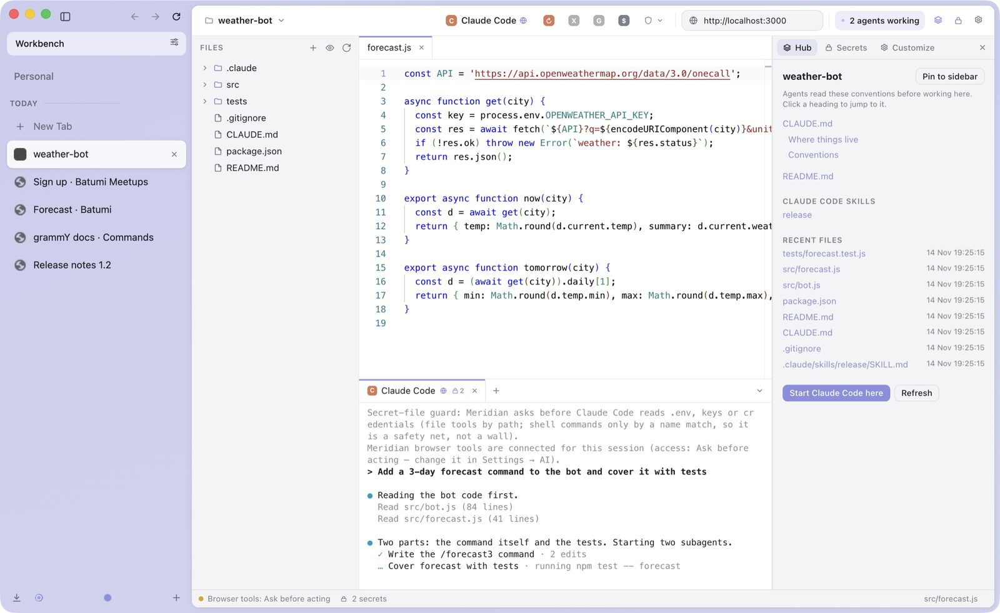
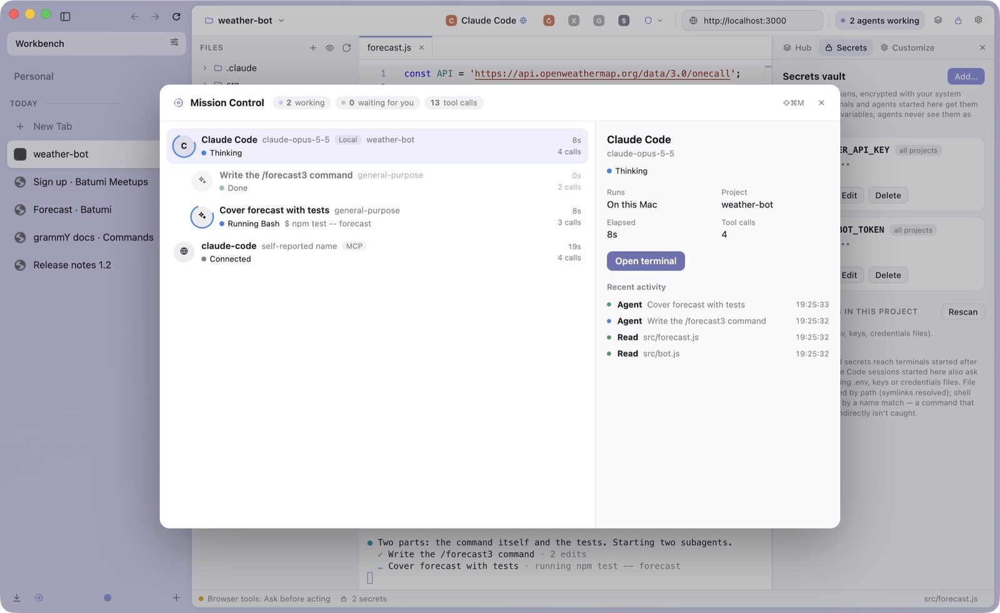

01 · Spaces & sidebar
A space for work. A space for life.
Separate spaces for work and life, each with its own colour and logins. Swipe between them.

Free & open source · macOS, Windows
And a few things Arc never had. Spaces, pinned tabs, split view and a command bar, just like you're used to. Bring your Arc sidebar over in one click.
01 · Spaces & sidebar
Separate spaces for work and life, each with its own colour and logins. Swipe between them.

02 · One-click Arc import
Spaces, colours, pinned tabs, folders and favorites move over on first launch.
Nothing leaves your computer and Arc isn't changed.

03 · Today tidies itself
Tabs you haven't touched in a while go to the archive. Pinned ones stay. Nothing is lost.
04 · Split view & Peek
Two pages side by side, and links that open in a quick preview instead of a new tab.

05 · AI built in
Ask about any page or anything at all, right from the command bar. Use your Claude API key, GitHub Copilot or a free local model.

06 · Private by default
Built-in ad and tracker blocking. No account, no telemetry. Your data stays on your computer.
Optional. If you work with coding agents, they get a home right next to the page they work on. If you don't, ignore this part and just browse.
MCP server
Claude Code, Claude Desktop, Codex or any MCP client can read and drive your browser with 28 tools: tabs and spaces, reading pages, clicking and typing, screenshots, split view, Boosts and translation. You choose the access level, and the tab it works in shows it.

Workbench
A browser tab with a file tree, the Monaco editor, git and real terminals. One-click launchers for Claude Code, Codex, Gemini CLI, Copilot, OpenCode and more.

Mission Control
Every agent in every space, what it's doing, and which one waits for you.

Free. No subscription, no account, no ads.
Free. No account, no sign-up.
Apple silicon (M1 and newer). Signed by Apple.
If Windows shows a blue window, click "More info", then "Run anyway". We just don't have Microsoft's paperwork yet.
Meridian is for macOS and Windows. The Linux build comes later.
Homebrew · Mac with Apple silicon
$ brew install --cask undermove/tap/meridian
Removing it with brew uninstall --cask meridian keeps your spaces and logins.
Yes. Meridian is open source (MIT license). No subscription, no account, no ads.
Windows does this for every app whose developer hasn't bought a certificate from Microsoft yet. It's paperwork: we haven't got ours yet. Click "More info", then "Run anyway". On Mac there's no such window: Meridian is signed and checked by Apple.
Yes. Your spaces, pinned tabs, folders and favorites come over, and so do your logins: Meridian copies Arc's cookies into the matching profiles (on macOS after you allow the keychain prompt), so sites you were signed in to stay signed in. Saved passwords and cards, history and boosts come over too. Nothing leaves your computer and Arc isn't changed. On Windows, quit Arc before importing.
Yes, on a Mac with Apple silicon: brew install --cask undermove/tap/meridian. Removing it with brew uninstall --cask meridian keeps your spaces and logins.
Meridian updates itself: it checks every 20 minutes, shows what's new and restarts with your tabs. It downloads only what changed. On version 0.6.29 or older? Download Meridian from this page once, your spaces, tabs and logins stay.
Yes. Meridian is built on Chromium, so extensions from the Chrome Web Store work, and your Arc or Chrome extensions come over with the import (Arc's, on Windows, not yet). Ads and trackers are blocked built in.